01 · VIDEO
Event Tagging & Play-by-Play
Identify actions and outcomes directly from game film; apply your event definitions and timestamps consistently.
Example output: event log with timestampsSports video tagging, basketball statistics, American football play review, and human quality checks—delivered in a clear, consistent format built around your platform rules. Experience across Krossover, InStat, Hudl, Playback Review, Idealize and NextPlay Analytics.
Whether you need an analyst to produce tags or a reviewer to catch mistakes before delivery, here's where I can contribute.
Identify actions and outcomes directly from game film; apply your event definitions and timestamps consistently.
Example output: event log with timestampsRecord shots, assists, rebounds, fouls, turnovers, substitutions, and other requested statistics from source footage.
Example output: spreadsheet and game summaryCheck play classifications, participant fields, motion, formations, down and distance against video and your platform rules.
Example output: validated play-level dataReview existing tags or AI-assisted data, investigate mismatches, and document necessary corrections.
Example output: correction / exception logCross-reference official rosters, box scores, and video context to help confirm team and player details.
Example output: verified roster sheetI can follow a client-provided rulebook, naming convention, and QA checklist rather than forcing a generic process.
Discuss a ProjectThe exact fields depend on your tagging glossary and software. My deliverables can include:
This featured case study shows the actual kind of basketball spreadsheet and video-based stat workflow I handled, with sensitive details intentionally blurred.
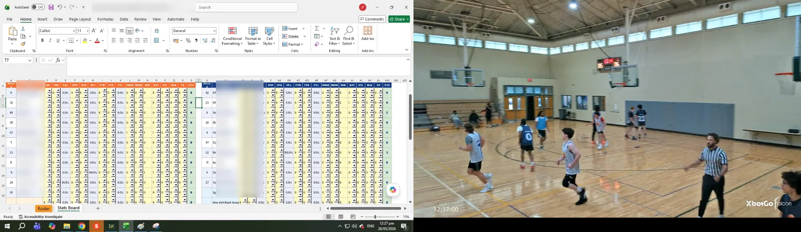
I tracked and updated player and team statistics from game footage inside a structured spreadsheet workflow, cross-checking entries against the video so the final numbers stayed organized, consistent, and useful across the season.
Review live or recorded footage carefully, identify the relevant play or event, and work directly from the source video rather than relying only on existing tags.
Convert game footage into organized fields such as player actions, play classifications, timestamps, results, and other project-specific data.
Cross-check tags, player IDs, timestamps, scores, formations, and source footage; correct inaccurate or missing information before final delivery.
Experienced with basketball, American football, volleyball, and dodgeball, adapting to different event definitions, tagging rules, and client systems.
Evidence distinction: The Downriver Hoops screenshot above is from an actual project (blurred for privacy). The following sports dashboards are illustrative recreations of my workflows—not original platform screenshots, exported client records, or fabricated client results.
These additional samples show the different sports workflows I handle, from basketball and American football to volleyball and dodgeball.
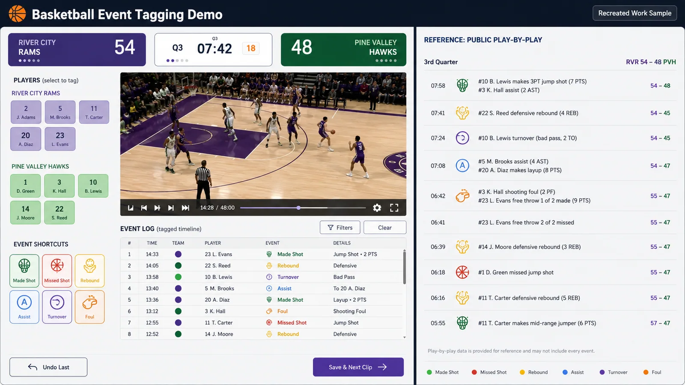
Tracked complete game statistics from video and play-by-play sources, with player identification and cross-checking to keep individual and team totals consistent.
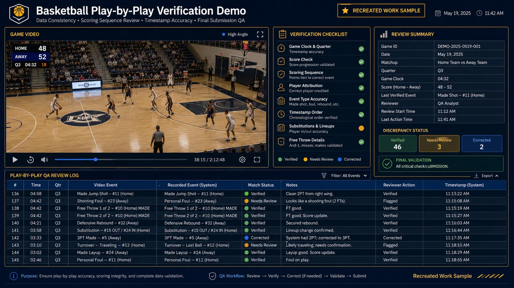
Cross-checked video, scoring changes, player actions, timestamps, and spreadsheet records to identify inconsistencies before final submission.
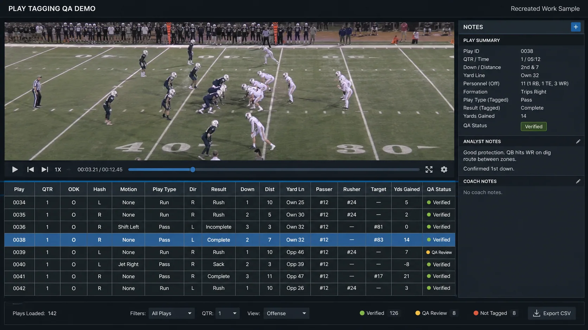
I review each football play against the video and manually enter or correct QTR, ODK, Hash, Motion Dir, Play Type, Play Dir, Result, Down, Distance, Yard Line, Passer, Rusher, and Receiver. GNLS, EFF, and Series are computed automatically by the system.
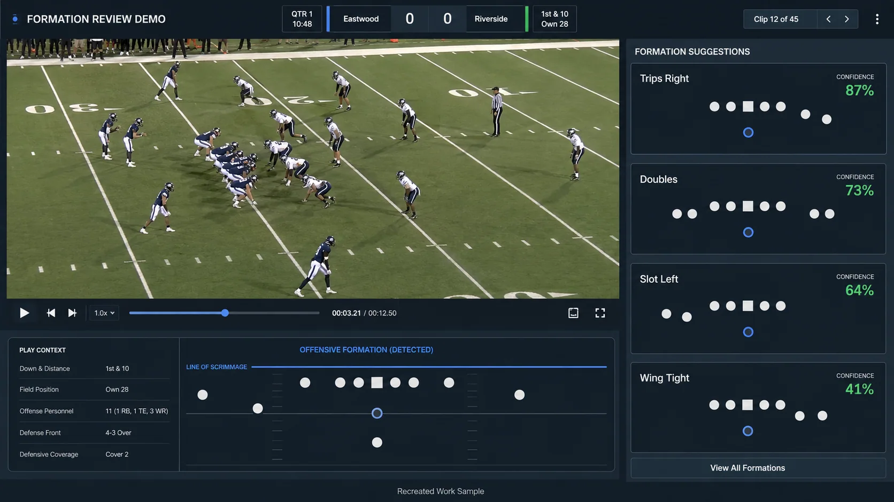
For OFF FORM, I manually place the offensive players into the formation grid based on the pre-snap alignment, then count the receiver distribution on the left and right, identify tight ends and backfield players, and assign the correct generic offensive formation.
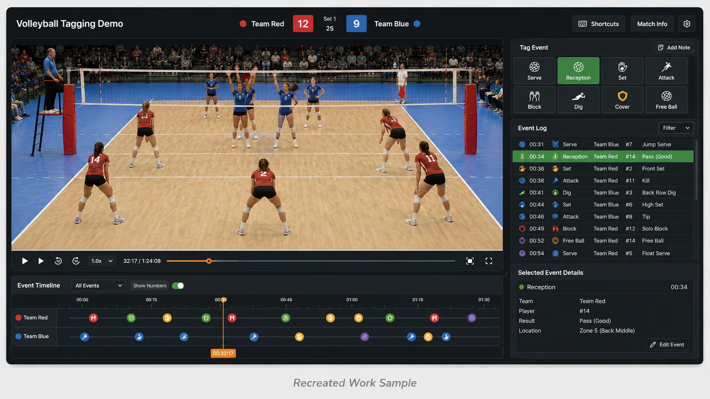
Reviewed rallies play by play and coded actions to the correct player so the match could be converted into reliable structured event data.
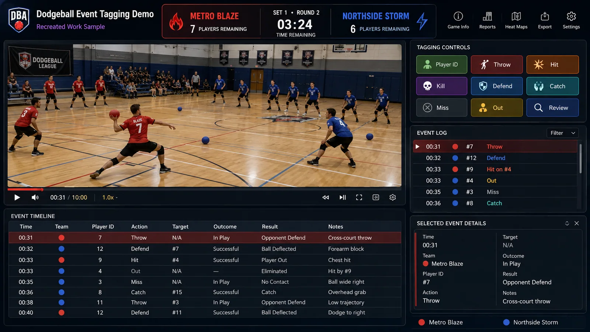
Tracked player-by-player actions from match video, assigned outcomes to the correct player, and reviewed the event sequence for consistency.
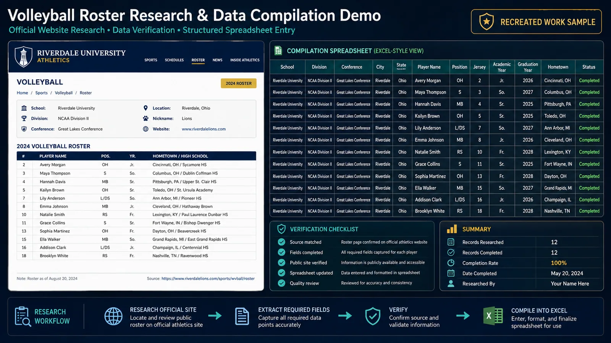
Researched player and school information from legitimate public athletics websites, verified the required details, and compiled the data into structured Excel or spreadsheet records for accurate roster research and data collection.
These downloadable synthetic examples show how I organize event data and QA notes. They use fictional games and players, not confidential client records or independently measured work results.
Illustration of time, player, outcome, and QC columns in a video-derived event log.
| Game_ID | Period | Game_Clock | Team | Player_No | Event |
|---|---|---|---|---|---|
| DEMO-BB-01 | Q1 | 09:42 | Blue | #12 | 2PT_MADE |
| DEMO-BB-01 | Q1 | 09:15 | White | #7 | 3PT_MISS |
| DEMO-BB-01 | Q1 | 09:11 | Blue | #21 | DEF_REB |
| DEMO-BB-01 | Q1 | 08:58 | Blue | #12 | ASSIST |
A sample structure for quarter, clock, down, distance, formation, result, and player fields.
| Game_ID | Quarter | Clock | Down | To_Go | Yard_Line | Formation |
|---|---|---|---|---|---|---|
| DEMO-FB-01 | 1 | 12:33 | 1 | 10 | OWN 25 | Shotgun |
| DEMO-FB-01 | 1 | 12:05 | 2 | 2 | OWN 33 | Singleback |
| DEMO-FB-01 | 1 | 11:32 | 1 | 10 | OWN 37 | Shotgun |
| DEMO-FB-01 | 1 | 11:11 | 2 | 10 | OWN 37 | I-Form |
Video-based quality control requires identifying what is wrong, verifying the source, correcting the field, and recording the reason. This example is hypothetical, not an actual client correction.
Why? In this invented demonstration, the shooter’s foot is on the three-point arc. A real reviewer would confirm the play in video before making any correction.
↓ Download example QA logThis original animation illustrates reviewing a basketball play, entering a provisional tag, checking the three-point arc, correcting the tag, and verifying the export. Fictional game, fictional data, simulated UI — not client footage or a recording of any named platform.
Request a real-work walkthroughI can review your requirements and discuss a small scoped trial using your own definitions.
Share Your WorkflowMy document-processing background reinforces the same strengths needed in sports QA: accuracy, repeatability, careful comparison, and consistent output.
Compared OCR output against original source documents, corrected recognition errors, cleaned extracted text, and verified records before submission during legal-document processing work.
At IDCSI, entered and verified sender/receiver details, addresses, contact information, dates, shipment and item descriptions, currencies, and amounts from handwritten waybill/logistics documents.
Cross-checked source material against structured output, identified missing or inconsistent information, and corrected data before final delivery.
Production-volume figures are approximate and describe previous high-volume workflows; actual project requirements and throughput vary by task complexity.
Independent client feedback covering basketball stats, multi-sport data work, and live event tagging.
“Huge shoutout to Jesse for all of his hard work this season! Keeping stats for an entire league is no easy task, but he handled it with professionalism, accuracy, and consistency every week. The players loved seeing their numbers, and it added another level of excitement and competitiveness to the season. We truly appreciate everything he did for Downriver Hoops and look forward to working with him again in the future!”
“It's been a pleasure working with Jesse doing sport statistics, he adapted incredibly well to different sport rulesets and even joined our elite team tagging Live Stats in Real-Time keeping up with the action. Highly recommended for freelancing work!”
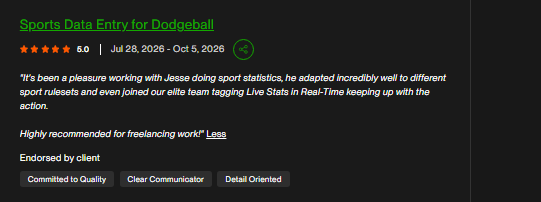
I use the same basic discipline whether I am reviewing football film, tagging volleyball, verifying basketball statistics, or processing documents.
Confirm the required fields, definitions, naming conventions, and client-specific instructions.
Review the video or document and enter only the information required by the workflow.
Validate player, event, timestamp, score, field, or document information against the original source.
Fix inaccurate or missing values while preserving information that is already correct.
Return structured, organized output that is ready for the next person or system in the workflow.
Sports analysis remains my active professional work (November 2022–Present), with ongoing freelance sports-data projects since 2026. My earlier roles add hands-on experience in sports indexing, document verification and high-volume data quality.
A shorter summary of the quality-focused roles behind my sports-data work.
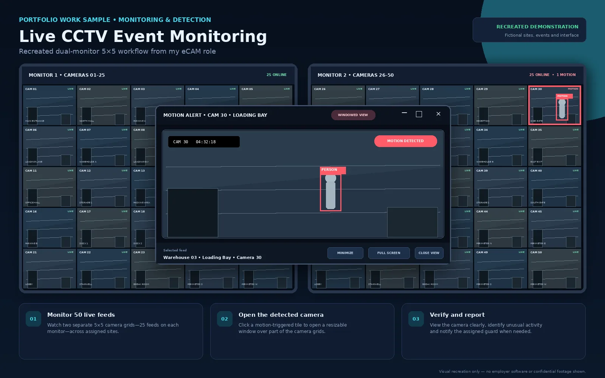
Monitored multiple live CCTV and surveillance feeds, focused on relevant camera activity, identified unusual or reportable incidents, documented findings, and escalated critical events according to procedure.
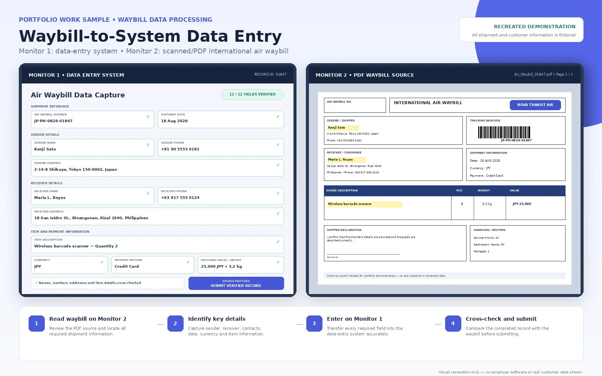
Processed handwritten shipping and logistics records by entering and verifying sender/receiver details, addresses, contact information, shipment dates, item descriptions, currencies, amounts, and other source-document fields in a high-volume workflow.
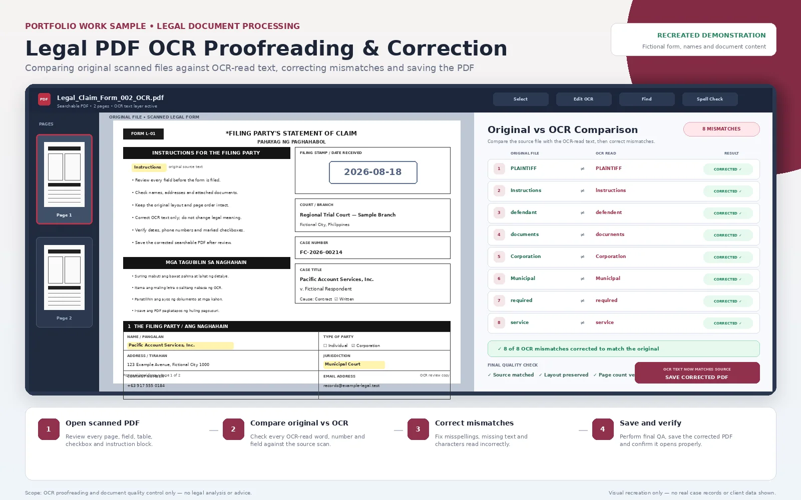
Reviewed OCR-extracted text from legal and lawsuit-related documents against the original source pages, corrected recognition errors, and verified the final text and record details before submission.
The three visuals above are anonymized workflow representations created for portfolio use; they do not display confidential employer or customer records.
A clear scope and a consistent workflow help both sides succeed.
Yes. I work from the event definitions, sample games and QA standards supplied by the client; each platform has its own conventions.
Yes. I can compare existing records against source footage, flag uncertain plays and document corrections for reviewer sign-off.
No client-only video or datasets are published in this portfolio. The downloadable sample data and the demo video are intentionally fictional.
The sport, game volume and duration, required events, platform or output template, example glossary, delivery timeline and any special research needs.
I take on sports video tagging, basketball statistics, American football review, player and roster research, and human data QA. Share your sport, workflow, and delivery requirements to discuss fit.
To help me assess your project, include the sport, estimated game volume, required tags or stats, platform, target format and deadline. A small paid trial task can help confirm fit when appropriate.